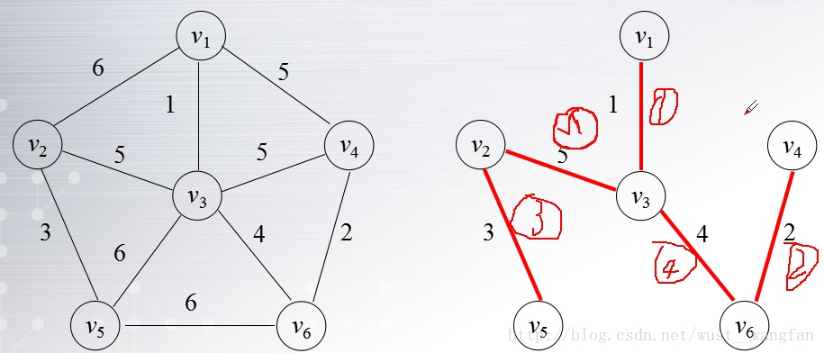
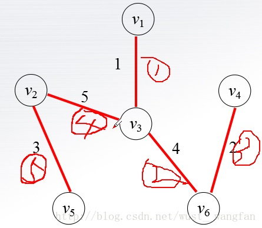
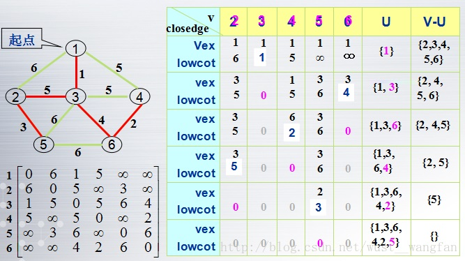
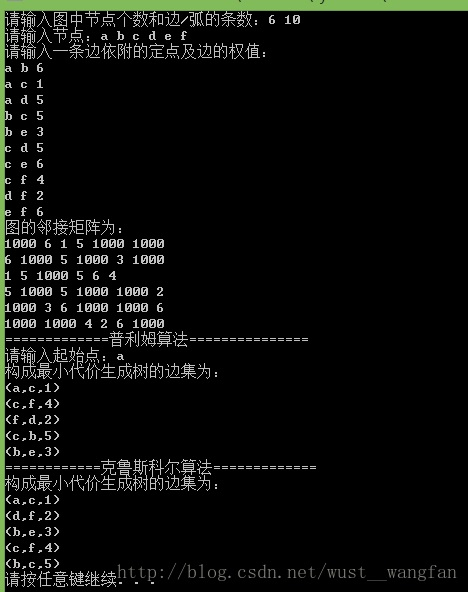

图的遍历
概念：
从图中某一顶点出发访遍图中其余顶点，且使每一个顶点仅被访问一次（图的遍历算法是求解图的连通性问题、拓扑排序和求关键路径等算法的基础。）
深度优先搜索(DFS)
- 基本思想:
- (1)在访问图中某一起始顶点 v 后，由 v 出发，访问它的任一邻接顶点 w1；
- (2)再从 w1 出发，访问与 w1邻接但还未被访问过的顶点 w2；
- (3)然后再从 w2 出发，进行类似的访问，…
- (4)如此进行下去，直至到达所有的邻接顶点都被访问过为止。
- (5)接着，退回一步，退到前一次刚访问过的顶点，看是否还有其它没有被访问的邻接顶点。如果有，则访问此顶点，之后再从此顶点出发，进行与前述类似的访问；如果没有，就再退回一步进行搜索。重复上述过程，直到连通图中所有顶点都被访问过为止。
- 算法实现(明显是要用到(栈)递归):
Void DFSTraverse( Graph G, Status (*Visit) (int v)) { // 对图G做深度优先遍历 for (v=0; v<G.vexnum; ++v) visited[v] = FALSE; // 访问标志数组初始化 for (v=0; v<G.vexnum; ++v) //这个循环是防止图是非连通的 if (!visited[v]) DFS(G,v); // 对尚未访问的顶点调用DFS } void DFS (Graph G,int v)//从第v个顶点出发递归地深度优先遍历图G { visited[v]=TRUE ; Visit(v); //访问第v个顶点 for(w=FirstAdjVex(G,v)/*从图的第v个结点开始*/; w>=0; w=NextAdjVex(G,v,w)/*v结点开始的w结点的下一个结点*/) if (!visited[w]) DFS(G,w); //对v的尚未访问的邻接顶点w递归调用DFS } - DFS时间复杂度分析：
- (1)如果用邻接矩阵来表示图，遍历图中每一个顶点都要从头扫描该顶点所在行，因此遍历全部顶点所需的时间为O(n2)。
- (2)如果用邻接表来表示图，虽然有 2e 个表结点，但只需扫描 e 个结点即可完成遍历，加上访问 n 个头结点的时间，因此遍历图的时间复杂度为O(n+e)。
广度优先搜索(BFS)
- 基本思想：
- (1)从图中某个顶点V0出发，并在访问此顶点后依次访问V0的所有未被访问过的邻接点，之后按这些顶点被访问的先后次序依次访问它们的邻接点，直至图中所有和V0 有 路径相通的顶点都被访问到；
- (2)若此时图中尚有顶点未被访问(非连通图)，则另选图中一个未曾被访问的顶点作起始点；
- (3)重复上述过程，直至图中所有顶点都被访问到为止。
- 算法实现(明显是要用到队列)
void BFSTraverse(Graph G, Status (*Visit)(int v)){ //使用辅助队列Q和访问标志数组visited[v] for (v=0; v<G.vexnum; ++v) visited[v] = FALSE; InitQueue(Q); // 置空的辅助队列Q for ( v=0; v<G.vexnum; ++v )//外层for循环是防止有非连通图的情况 if ( !visited[v]) { // v尚未访问 visited[v] = TRUE; Visit(v); EnQueue(Q, v); // v入队列 while (!QueueEmpty(Q)) { DeQueue(Q, u); // 队头元素出队并置为u for (w=FirstAdjVex(G,u);w>=0;w=NextAdjVex(G,u,w)） if ( ! visited[w]){ //w为u的尚未访问的邻接顶点 visited[w] = TRUE; Visit(w); EnQueue(Q, w); } //if } //while }if } // BFSTraverse - BFS时间复杂度分析：
- (1) 如果使用邻接表来表示图，则BFS循环的总时间代价为 d0 + d1 + … + dn-1 = 2e=O(e)，其中的 di 是顶点 i 的度
- (2)如果使用邻接矩阵，则BFS对于每一个被访问到的顶点，都要循环检测矩阵中的整整一行（ n 个元素），总的时间代价为O(n2)。
图的连通性问题：
相关术语：
- 连通分量的顶点集：即从该连通分量的某一顶点出发进行搜索所得到的顶点访问序列；
- 生成树：某连通分量的极小连通子图(深度优先搜索生成树和广度优先搜索生成树)；
- 生成森林：非连通图的各个连通分量的极小连通子图构成的集合。
最小生成树：
Kruskal算法:
- 先构造一个只含n个顶点的森林，然后依权值从小到大从连通网中选择边加入到森林中去，并使森林中不产生回路，直至森林变成一棵树为止(详细代码见尾文)。

Prim算法（还是看上图理解）：
- 假设原来所有节点集合为V,生成的最小生成树的结点集合为U,则首先把起始点V1加入到U中,然后看比较V1的所有相邻边，选择一条最小的V3结点加入到集合U中,
然后看剩下的v-U结点与U中结点的距离，同样选择最小的.........一直进行下去直到边数=n-1即可。

算法设计思路:
- 增设一辅助数组Closedge[ n ]，每个数组分量都有两个域：
要求：求最小的Colsedge[ i ].lowcost
两种算法比较：
- 普里姆算法的时间复杂度为 O(n2)，与网中的边数无关,适于稠密图；
- 克鲁斯卡尔算法需对 e 条边按权值进行排序，其时间复杂度为 O(eloge)，e为网中的边数,适于稀疏图。
完整最小生成树两种算法实现：
#include<stdio.h>
#include<stdlib.h>
#include<iostream>
using namespace std;
#define MAX_VERTEX_NUM 20
#define OK 1
#define ERROR 0
#define MAX 1000
typedef struct Arcell
{
double adj;//顶点类型
}Arcell,AdjMatrix[MAX_VERTEX_NUM][MAX_VERTEX_NUM];
typedef struct
{
char vexs[MAX_VERTEX_NUM]; //节点数组,
AdjMatrix arcs; //邻接矩阵
int vexnum,arcnum; //图的当前节点数和弧数
}MGraph;
typedef struct Pnode //用于普利姆算法
{
char adjvex; //节点
double lowcost; //权值
}Pnode,Closedge[MAX_VERTEX_NUM]; //记录顶点集U到V-U的代价最小的边的辅助数组定义
typedef struct Knode //用于克鲁斯卡尔算法中存储一条边及其对应的2个节点
{
char ch1; //节点1
char ch2; //节点2
double value;//权值
}Knode,Dgevalue[MAX_VERTEX_NUM];
//-----------------------------------------------------------------------------------
int CreateUDG(MGraph & G,Dgevalue & dgevalue);
int LocateVex(MGraph G,char ch);
int Minimum(MGraph G,Closedge closedge);
void MiniSpanTree_PRIM(MGraph G,char u);
void Sortdge(Dgevalue & dgevalue,MGraph G);
//-----------------------------------------------------------------------------------
int CreateUDG(MGraph & G,Dgevalue & dgevalue) //构造无向加权图的邻接矩阵
{
int i,j,k;
cout<<"请输入图中节点个数和边/弧的条数：";
cin>>G.vexnum>>G.arcnum;
cout<<"请输入节点：";
for(i=0;i<G.vexnum;++i)
cin>>G.vexs[i];
for(i=0;i<G.vexnum;++i)//初始化数组
{
for(j=0;j<G.vexnum;++j)
{
G.arcs[i][j].adj=MAX;
}
}
cout<<"请输入一条边依附的定点及边的权值："<<endl;
for(k=0;k<G.arcnum;++k)
{
cin >> dgevalue[k].ch1 >> dgevalue[k].ch2 >> dgevalue[k].value;
i = LocateVex(G,dgevalue[k].ch1);
j = LocateVex(G,dgevalue[k].ch2);
G.arcs[i][j].adj = dgevalue[k].value;
G.arcs[j][i].adj = G.arcs[i][j].adj;
}
return OK;
}
int LocateVex(MGraph G,char ch) //确定节点ch在图G.vexs中的位置
{
int a ;
for(int i=0; i<G.vexnum; i++)
{
if(G.vexs[i] == ch)
a=i;
}
return a;
}
void MiniSpanTree_PRIM(MGraph G,char u)//普利姆算法求最小生成树
{
int i,j,k;
Closedge closedge;
k = LocateVex(G,u);
for(j=0; j<G.vexnum; j++)
{
if(j != k)
{
closedge[j].adjvex = u;
closedge[j].lowcost = G.arcs[k][j].adj;
}
}
closedge[k].lowcost = 0;
for(i=1; i<G.vexnum; i++)
{
k = Minimum(G,closedge);
cout<<"("<<closedge[k].adjvex<<","<<G.vexs[k]<<","<<closedge[k].lowcost<<")"<<endl;
closedge[k].lowcost = 0;
for(j=0; j<G.vexnum; ++j)//新顶点并入U后重新选择最小边
{
if(G.arcs[k][j].adj < closedge[j].lowcost)
{
closedge[j].adjvex = G.vexs[k];
closedge[j].lowcost= G.arcs[k][j].adj;
}
}
}
}
int Minimum(MGraph G,Closedge closedge) //求closedge中权值最小的边，并返回其顶点在vexs中的位置
{
int i,j;
double k = 1000;
for(i=0; i<G.vexnum; i++)
{
if(closedge[i].lowcost != 0 && closedge[i].lowcost < k)
{
k = closedge[i].lowcost;
j = i;
}
}
return j;
}
void MiniSpanTree_KRSL(MGraph G,Dgevalue & dgevalue)//克鲁斯卡尔算法求最小生成树
{
int p1,p2,i,j;
int bj[MAX_VERTEX_NUM]; //标记数组
for(i=0; i<G.vexnum; i++) //标记数组初始化
bj[i]=i;
Sortdge(dgevalue,G);//将所有权值按从小到大排序
for(i=0; i<G.arcnum; i++)
{
p1 = bj[LocateVex(G,dgevalue[i].ch1)];
p2 = bj[LocateVex(G,dgevalue[i].ch2)];
if(p1!=p2)
{
cout<<"("<<dgevalue[i].ch1<<","<<dgevalue[i].ch2<<","
<<dgevalue[i].value<<")"<<endl;
for(j=0; j<G.vexnum; j++)
{
if(bj[j] == p2)
bj[j] = p1;
}
}
}
}
void Sortdge(Dgevalue & dgevalue,MGraph G)//对dgevalue中各元素按权值按从小到大排序
{
int i,j;
double temp;
char ch1,ch2;
for(i=0; i<G.arcnum; i++)
{
for(j=i; j<G.arcnum; j++)
{
if(dgevalue[i].value > dgevalue[j].value)
{
temp = dgevalue[i].value;
dgevalue[i].value = dgevalue[j].value;
dgevalue[j].value = temp;
ch1 = dgevalue[i].ch1;
dgevalue[i].ch1 = dgevalue[j].ch1;
dgevalue[j].ch1 = ch1;
ch2 = dgevalue[i].ch2;
dgevalue[i].ch2 = dgevalue[j].ch2;
dgevalue[j].ch2 = ch2;
}
}
}
}
void main()
{
int i,j;
MGraph G;
char u;
Dgevalue dgevalue;
CreateUDG(G,dgevalue);
cout<<"图的邻接矩阵为："<<endl;
for(i=0; i<G.vexnum; i++)
{
for(j=0; j<G.vexnum; j++)
cout << G.arcs[i][j].adj<<" ";
cout<<endl;
}
cout<<"=============普利姆算法===============\n";
cout<<"请输入起始点：";
cin>>u;
cout<<"构成最小代价生成树的边集为：\n";
MiniSpanTree_PRIM(G,u);
cout<<"============克鲁斯科尔算法=============\n";
cout<<"构成最小代价生成树的边集为：\n";
MiniSpanTree_KRSL(G,dgevalue);
}
运行结果：
